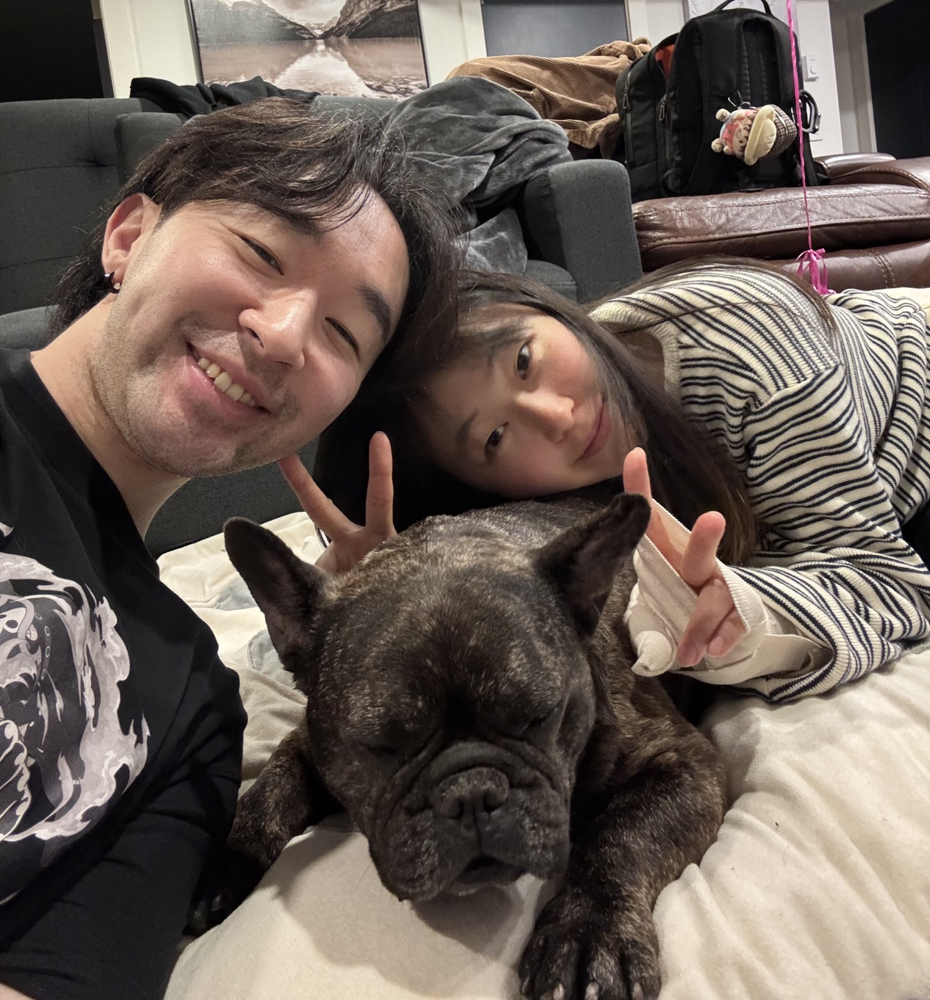

My mom
Role model
My role model for hard work and perseverance.
She built everything from the ground up. She’s detailed, incredibly resilient, and always willing to do the thankless work.
If there’s something you should know about me, it’s that I can nerd out over niche details for hours. Dialing in espresso, custom keyboards, the right pair of shoes, or why episode 1070 of One Piece is my favourite. Once I’m interested, I’ll obsess over the details and talk about them way longer than I meant to.
For work, I’m at Scorecard, where I work across product and engineering to build RL environments. I handle the infra, scaling, and simulations. At home I have two agents of my own, luibot and luibuilder, and I keep finding new things to hand them.

She built everything from the ground up. She’s detailed, incredibly resilient, and always willing to do the thankless work.
Sometimes a little too honest. I try to be as real with the people I care about as he is, but maybe a bit gentler.
I look up to her because she moved to New York, chased what she wanted, and made it happen. She’s a huge part of why I finally chased my own dream of working at a startup in San Francisco, and she helped me land at Scorecard.
She’s my spoiled, squishy, and very sweet French Bulldog.
She makes me kinder, healthier, and better at living on my own. We support each other through work and everything else, and I’m a better person because of her.
A jigsaw puzzle app for my girlfriend, my friends, and me.
My girlfriend and I are long distance now, and online jigsaw puzzles became one of the things we do together. We wanted to make puzzles from personal photos, but we didn’t want to upload them somewhere without knowing how they were stored or used. So I built my own version where I know exactly what happens to them.
I left a system design interview wanting to try the idea myself.
The idea was to upload a video, ask questions about it in plain English, and get answers back. It was mostly a way to learn how video querying with AI could work by building it myself.
I built the software I wished we had at the night market.
When I became an assistant manager at the Richmond Night Market, scheduling, payroll, and onboarding were spread across Excel, Google Sheets, and a few HR apps. I asked my boss if I could build one place for all of it. It still runs every season and saves the team a couple grand a month.
A small project that helped my friends get into the classes they wanted.
My friend Kelvin had a script that registered him when a UBC course opened up. We hosted it so other people could use it, then changed it to email alerts because nobody wants to give a random app their school password. I learned how to keep something running in the cloud, and a few friends got into classes they needed.
luibot does my research. He sorts every transaction into my own categories as it comes in, so my budget ends up in a Google Sheet with a report at the end. He orders my DoorDash and is learning what I like. He also helps me think through investments and triages my email.
luibuilder is my coding agent. He built the games my girlfriend and I play together since we’re long distance, and he looks after the VPS they run on. Same with my other side projects. It’s nice having an agent floating around that I can just hand an idea to.
A custom PC, custom keyboards, a nice chair and monitor, and a few One Piece stuffies and knick-knacks keeping me company. It’s one of the things people recognize me for.
I used to be into buying and selling shoes and streetwear. I don’t anymore, but the shoes stayed.
The other thing people recognize me for. I’m still dialing it in, and I’m okay with that.
My sister Andrea is already there. I want a stretch of my life there too.
I want us to actually live there for a while.
Cows, chickens, sheep, pigs, and vegetables too. The plan is to spend my days automating every part of it with robots, which is where luibot and luibuilder come in.